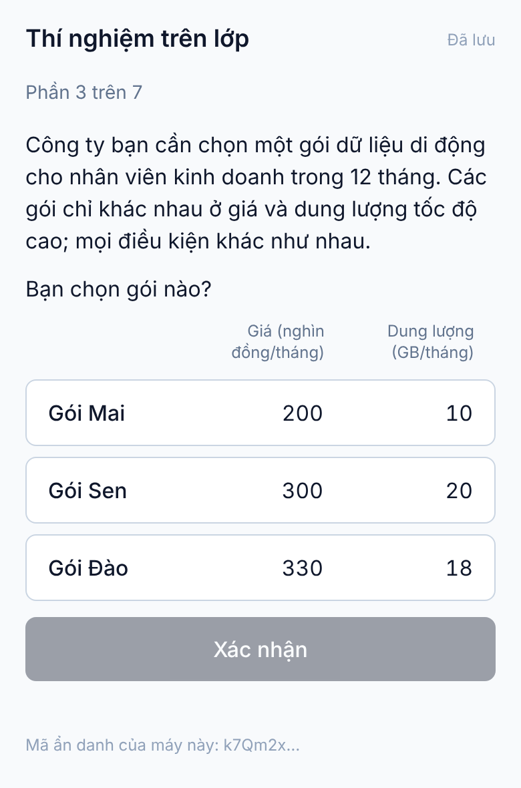
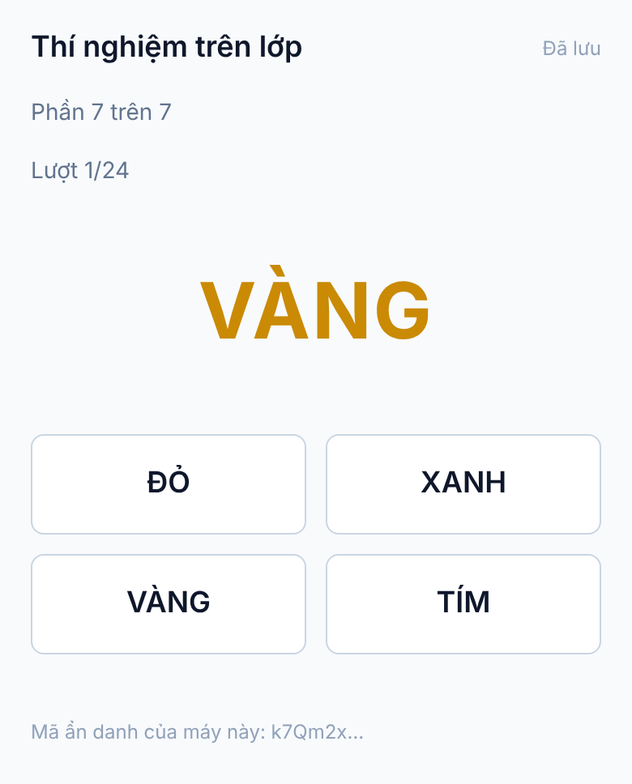
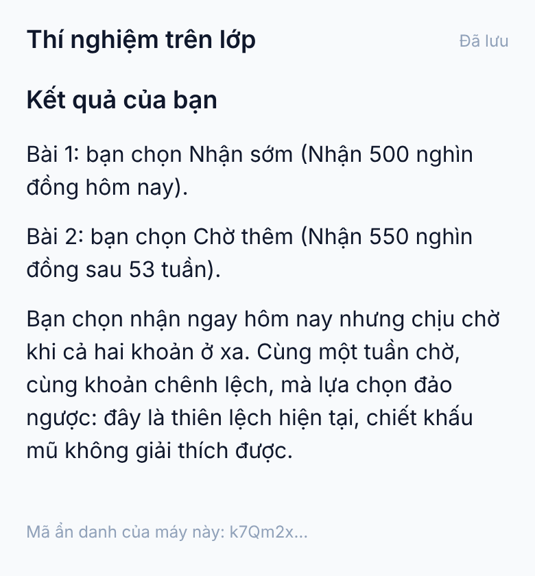

Students make real decisions on their phones before the lecture. As each concept is taught, the class sees its own results next to the original study.
Instructor console (sign-in required)Collect first, reveal later: students answer on intuition before they learn the concept, so the class's own numbers are worth discussing.
Students scan the QR code on the projector. No names, emails or student IDs, and nothing to install.
Everyone works at their own pace through the day's experiments before any teaching. Two-version experiments split the class into groups automatically.
When the lecture reaches a concept, the projector shows three columns: this class, earlier classes, the original study. Each phone shows a personal result.
Strategic games run in rounds. Pairs are formed automatically; an odd student plays the computer, whose moves never count in the class results.
Screens from a Vietnamese session. Sessions also run in English.



Each session picks the experiments that fit the lecture. Every experiment comes with the original study for comparison.
No names or personal details. Groups under three people are merged on the projector, so no one can be identified from the numbers.
Every experiment follows a published study, and the class result always appears beside the original figures.
Each session runs in Vietnamese or English, chosen when the room is created.
Students use their phone's browser. If the connection drops, they keep going and answers are sent once it returns.
An anonymous summary of each class is kept so later classes can compare. Raw data is deleted after 30 days.
No cost to students or institutions.
The tool is being piloted in the classes and workshops I teach. If you would like a behavioral experiments session for your class, a workshop or an executive program, get in touch.